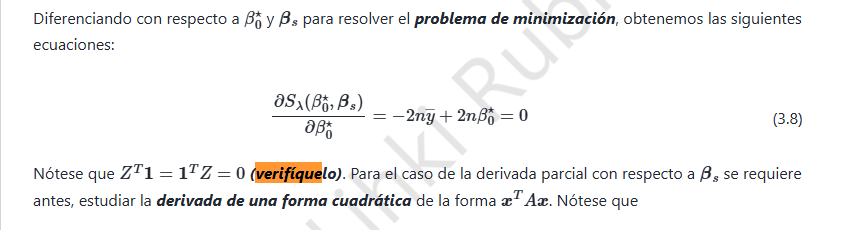

4. Ridge · Centrado, intercepto y formas cuadráticas

4.1 Identidad del diseño centrado
Sea \(Z\) la matriz con columnas \(z_{ij}=(x_{ij}-\bar x_j)/s_j\), donde \(s_j>0\) y \(\bar x_j=(1/n)\sum_i x_{ij}\). Sea \(\mathbf 1\) el vector de \(n\) unos.
La componente \(j\) del producto \(Z^T\mathbf 1\) es
De manera inmediata, por transposición,
El resultado se debe al centrado; la división por \(s_j\) no altera que la suma sea cero.
4.2 Derivada respecto al intercepto (ecuación 3.8)
El criterio ridge sin penalización del intercepto es
Denotamos por \(r=y-\beta_0\mathbf1-Z\beta\) los residuos. Entonces,
Igualando a cero se obtiene \(\boxed{\hat\beta_0=\bar y}\). Si también se centra la respuesta, \(\bar y=0\).
4.3 Derivada de la forma cuadrática
Sean \(u=(u_1,\ldots,u_p)^T\) y una matriz \(M=(m_{jk})\). Como \(u^TMu=\sum_{j,k}m_{jk}u_ju_k\), la derivada de cada componente es
Agrupando,
En particular, si \(M=M^T\), queda \(\nabla_u(u^TMu)=2Mu\); además, \(\nabla_u(a^Tu)=a\).
4.4 Ecuación normal ridge y verificación del mínimo
Derivando con respecto a \(\beta\):
Usamos \(Z^T\mathbf1=0\) e igualamos a cero:
La hessiana es \(2(Z^TZ+\lambda I_p)\), definida positiva cuando \(\lambda>0\). Por consiguiente, el punto crítico es un mínimo global único.
Conclusión: centrar las características desacopla el intercepto de los coeficientes. Ridge penaliza los coeficientes, no el nivel medio de la respuesta.